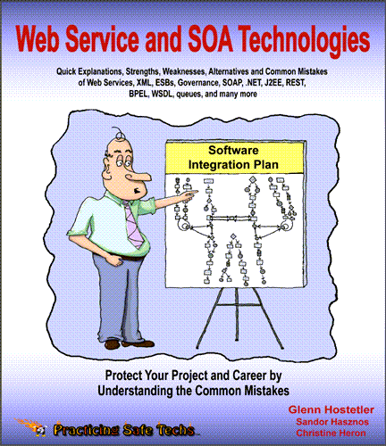
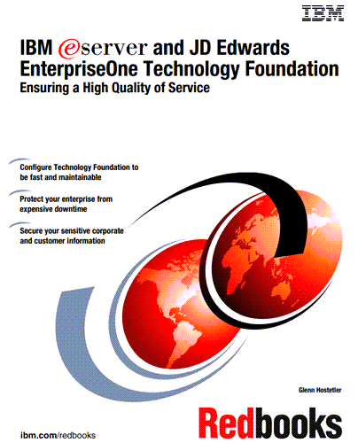

Cloud & Azure
Designing, deploying, and running systems on Azure.
App Service, VMs, Container Instances, Docker, Application Insights, Grafana, Key Vault, Azure DevOps, OpenSearch, Redis. Kubernetes (working knowledge).
Cloud platform and integration engineer
I design, build, and secure reliable systems on Azure, and I turn complex goals into a clear plan of work. Nearly three decades of experience, including 15+ years in healthcare and public health.
Primary skills
Six areas I'm strongest in, and the tools I use for each.
Designing, deploying, and running systems on Azure.
App Service, VMs, Container Instances, Docker, Application Insights, Grafana, Key Vault, Azure DevOps, OpenSearch, Redis. Kubernetes (working knowledge).
Turning a big goal into a sound design and a clear, ordered plan of work.
Requirements and ticket-backlog planning, solution architecture, task sequencing, code and architecture reviews, mentoring.
Finding and fixing vulnerabilities, and keeping them fixed.
Snyk and code-scan remediation, XSS, open-redirect, and TLS hardening, security pipelines, secrets management (Key Vault, managed identity), protection against automated and AI-assisted attacks.
Repeatable releases, and systems you can see into.
YAML pipelines, Bicep, release automation, KQL dashboards, load testing, code coverage.
Moving data between systems without losing any of it.
REST, SOAP, data conversion, guaranteed-delivery design, CQRS, HL7.
Hands-on building, and reviewing what others build.
C#/.NET, MVC, JavaScript, Bootstrap 5, HTML/CSS, SQL Server, accessibility (Section 508).
About me
For nearly three decades I've built and connected systems, including more than 15 years of data exchange in healthcare and public health. These days my work is mostly cloud platforms, security, delivery pipelines, and planning: designing the system, deciding what gets built in what order, and making sure it's secure, observable, and doesn't lose data.
I strive to keep up with all the technologies, from front to back, that it takes to make a solution work. I'm high energy, easy to work with, and happy to take on the painful tasks other people avoid.
If that sounds like what your team needs, I'd love to talk. I'll do my absolute best to move your project forward while having a fantastic time with you and your staff.
Experience
Recent work as a team lead at InductiveHealth / Envision Technology.
Select a role to see more detail.
Earlier engagements within this period included State Street, Cerner, and Oracle.
Selected projects
Short case studies from recent years. Customer and system names are left out.
Reliability at scale, with an outside partner
The problem
Searching message logs in SQL Server had become a bottleneck because of the volume of data. The replacement is an external service, so losing a log record was the main risk.
What I did
Built the application side. Separated reading from writing (CQRS) in two codebases. Designed a guaranteed-delivery path: a database queue, ordered delivery so an update can never overtake its creation, tuned retry rules, and queue-depth reporting. Added a verification job that compares both systems, a resend pipeline for anything missing, a new Bootstrap 5 search page, and monitoring workbooks.
Where it stands
Rolled out to all sites in stages in 2026, with feature flags to switch pieces on and off.
Planning and architecture
The problem
New facilities need a way to connect and be checked without putting live data at risk.
What I did
Designed a 13-part plan: a separate onboarding endpoint with validate-only processing, credentials and permissions, data-quality checks, test patients, replaying onboarding messages, and removing patient data from logs. Wrote the backlog and built the first-phase groundwork: a feature flag limited to staff, onboarding flags on facilities and logs, and onboarding status on all telemetry.
Where it stands
First-phase groundwork delivered; later phases are planned and ticketed.
Modernization and delivery pipelines
The problem
A key component was tangled into a large .NET Framework application and couldn't be built, tested, or deployed on its own.
What I did
Did much of the work to move it into its own repository: moved shared types out, removed code embedded in the database, and deleted obsolete projects, old protocol support, and unused stored procedures. Then built its pipelines: App Service deployments to four environments, security scans that fail on critical findings, code coverage and static analysis, and an integration-test environment defined in Bicep.
Where it stands
The component now builds, tests, and deploys on its own.
Integration across many organizations
The problem
State and local immunization programs needed to send and query data with the CDC and with each other, reliably and at scale.
What I did
Over about 68 tickets: improved outgoing message quality (templates, filtering opted-out patients and inactive endpoints), built the algorithm that fills facility-code fields, and added operational tools such as paging, automated retries for failed messages, and connection testing for every jurisdiction. Built the CDC reporting jobs for routine vaccination and flu files, including a large-file version, and supported the IZ Gateway connections.
Where it stands
Rolled out to every jurisdiction.
Data conversion and third-party APIs
The problem
Each jurisdiction delivers data in its own file layout, with its own quirks.
What I did
Built a flat-file-to-HL7 conversion with its tables, reports page, and dozens of field-mapping rules. Integrated a third-party address-validation service and updated stored procedures, reports, and imports to use it. Built birth and death record imports that feed the standard batch process.
Where it stands
Rolled out one jurisdiction at a time, then to all of them.
Database operations
The problem
Message-log tables would grow without limit, slowing queries and storage.
What I did
Set up monthly partition maintenance (adding new partitions, purging old ones), turned archiving back on in production, fixed a purge bug and an integer-overflow problem, and wrote the long-term archive and purge strategy as a sequenced plan for the DBAs.
Where it stands
Monthly maintenance running; the long-term strategy is documented and ticketed.
Root-cause analysis
The problem
When several records compete for one patient, it wasn't clear how the winner was chosen or what it was allowed to change.
What I did
Investigated the selection logic, found defects in several rules, in logging, and in clinic configuration, defined which fields a winning record may update, and identified the other jurisdictions affected. Produced a prioritized set of fixes and a data-cleanup script for the data team.
Where it stands
Findings delivered and the fixes are ticketed.
Services
The kinds of problems I'm glad to take on for your team.
Pipelines, infrastructure as code, containers, and monitoring, so your releases are repeatable and you can see what's happening in production.
Triage and clear scanner findings, fix the underlying classes of bugs, and put scans in the pipeline so problems stay fixed.
Turn a big goal into requirements, a sound design, and an ordered backlog your team can execute.
APIs and data pipelines that don't lose messages: guaranteed delivery, verification, reruns, and observability.
Find out why it's slow: databases, caching, search, and load testing, with options weighed before anything is rebuilt.
Reviews that make the code and the people better, and training that brings new team members up to speed quickly.
Track record
Employers, consulting clients, and agencies over the years.
Kind words
Notes from the people I've worked with over the years.
Publications
I've written three books, plus a number of IBM white papers on best practices for IBM middleware.

A business-minded look at the strengths, weaknesses, and common mistakes of software integration technologies, written with a humorous bent. Visit the book's original web site.
Focused on the hardest questions of the Project Management Professional exam. It was adopted by PMP training schools. Find it on Amazon.

How to architect systems, especially on IBM and Oracle infrastructure, so they don't go down. Read the Redbook (PDF).
Behind the scenes
This site is a work in progress and a way to keep my cloud skills sharp. Here's what it runs on today, and how I'm moving it to containers on Azure with infrastructure as code, a build pipeline, and monitoring.
Contact
Email is the fastest way to reach me.